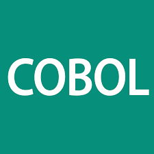

Born in December 9, 1906, in New York City, NY.At Vassar College,
she obtained a B.A. in mathematics and physics. She continued her
education at Yale University by completing a masters and Ph.D. in
mathematics. She became Director of Automatic programming in 1952
and subsequently oversaw the company's endeavor to produce
specifications for a common business language. From 1959 to 1961,
Hopper lead the team that invented COBOL (Common Business-Oriented Language),
the first user-friendly business computer software program.
COBOL (Common Business-Oriented Language) is a high-level programming language
for business applications. It was the first popular languaged designed to be
operating system agnostic and is still in use in many financial and business
applications today.COBOL was designed for finance, human resources and other
business computer programs. Unlike some high-level computer programming languages,
COBOL uses English words and phrases to make it easier for ordinary business users
to understand.
